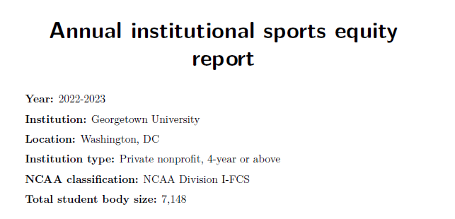
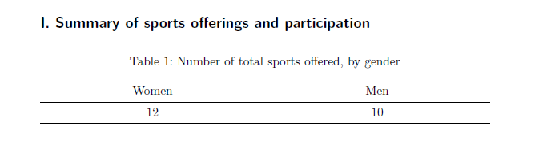
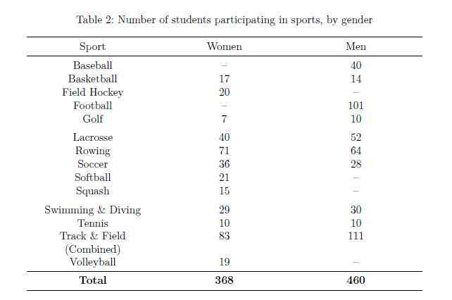
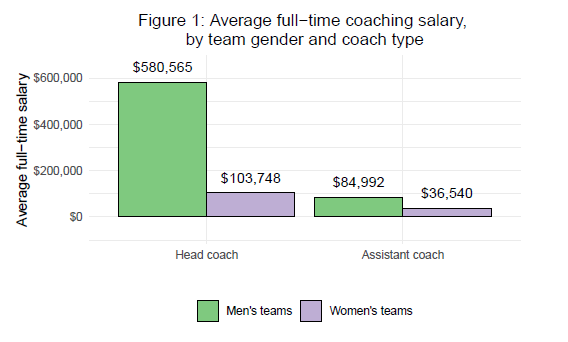
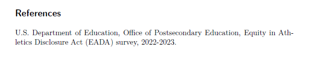

Code
```{r}
#| eval: false
#| code-fold: true
library(tidyverse)
library(lubridate)
library(assertr)
library(quarto)
library(readxl)
library(glue)
library(kableExtra)
library(janitor)
root <- getwd()
```In this section, we present a potential future use for the EADA data that is well-suited for a cloud computing environment, has high potential value for academic institutions, and is remarkably efficient to execute.
The institution-level structure of the EADA files are ideal for generating standardized, institution-specific reports that provide a snapshot of the sports equity landscape at the institution. Because multiple years of data are available, it is also highly feasible to generate cross-year institution comparison reports, either for a particular institution or for the entire institution universe. Because each file contains 1,800+ institutions and reports are not dependent on one another, this is an ideal task to parallelize in a cloud environment.
In this section, we present a tutorial on how to prepare year-specific snapshot files for a set of institutions using R. For the purpose of this tutorial, we deployed these steps locally on a small subset of institutions. However, in the final section, we will discuss thoughts for scaling this task up for execution in the cloud.
Below, we illustrate the structure of the EADA data for five institutions from the 2022-23 EADA file (with the first 30 variables).
| unitid | OPEID | institution_name | addr1_txt | addr2_txt | city_txt | state_cd | zip_text | ClassificationCode | classification_name | ClassificationOther | EFMaleCount | EFFemaleCount | EFTotalCount | sector_cd | sector_name | STUDENTAID_MEN | STUDENTAID_WOMEN | STUDENTAID_COED | STUDENTAID_TOTAL | STUAID_MEN_RATIO | STUAID_WOMEN_RATIO | STUAID_COED_RATIO | RECRUITEXP_MEN | RECRUITEXP_WOMEN | RECRUITEXP_COED | RECRUITEXP_TOTAL | HDCOACH_SALARY_MEN | HDCOACH_SALARY_WOMEN | HDCOACH_SALARY_COED |
|---|---|---|---|---|---|---|---|---|---|---|---|---|---|---|---|---|---|---|---|---|---|---|---|---|---|---|---|---|---|
| 131496 | 00144500 | Georgetown University | 37th and O St NW | Georgetown University | Washington | DC | 200570001 | 2 | NCAA Division I-FCS | NA | 2995 | 4153 | 7148 | 2 | Private nonprofit, 4-year or above | 5559743 | 5871423 | 2478 | 11433644 | 49 | 51 | 0 | 997498 | 153634 | 7467 | 1158599 | 580565 | 103748 | 109326 |
| 170976 | 00232500 | University of Michigan-Ann Arbor | 1109 Geddes Ave | NA | Ann Arbor | MI | 48109 | 1 | NCAA Division I-FBS | NA | 14705 | 16443 | 31148 | 1 | Public, 4-year or above | 17929935 | 13947339 | NA | 31877274 | 56 | 44 | 0 | 3876973 | 940960 | NA | 4817933 | 1086369 | 258780 | NA |
| 198419 | 00292000 | Duke University | 103 Allen Bldg | NA | Durham | NC | 27708 | 1 | NCAA Division I-FBS | NA | 3114 | 3429 | 6543 | 2 | Private nonprofit, 4-year or above | 14309544 | 13291616 | NA | 27601160 | 52 | 48 | 0 | 2459555 | 574848 | NA | 3034403 | 687176 | 209582 | NA |
| 199120 | 00297400 | University of North Carolina at Chapel Hill | 103 South Bldg Cb 9100 | NA | Chapel Hill | NC | 27599 | 1 | NCAA Division I-FBS | NA | 7532 | 11630 | 19162 | 1 | Public, 4-year or above | 8398938 | 6738951 | NA | 15137889 | 55 | 45 | 0 | 2155890 | 848579 | NA | 3004469 | 747659 | 255997 | NA |
| 218070 | 00343400 | Furman University | 3300 Poinsett Highway | NA | Greenville | SC | 296136162 | 2 | NCAA Division I-FCS | NA | 928 | 1331 | 2259 | 2 | Private nonprofit, 4-year or above | 7852046 | 4732379 | NA | 12584425 | 62 | 38 | 0 | 263225 | 141196 | NA | 404421 | 196422 | 99950 | NA |
Next, we identify key statistics we want each report to contain. We will present:
A table with the total number of sports offered, by gender
A table with the number of students participating in each sport, by gender
A figure with average full−time coaching salary, by team gender and coach type (head vs. assistant)
In the following sections, we will discuss key code chunks from our reports_template.qmd file. This is the script that provides the template for our PDF reports. The full script is available on our GitHub repository here.
Importantly, the document’s YAML header should include the parameters that vary during report production. In this case, these are:
Institution name
School year (spring)
We initialize our default parameter values as Georgetown University for 2022-23.
---
title: "Annual institutional sports equity report"
format: pdf
theme: litera
toc: FALSE
fontsize: 12pt
embed-resources: TRUE
page-layout: full
params:
inst: Georgetown University
year: 2023
geometry:
- top=2cm
---Next, we use our parameter values to import the proper year of data and subset the data to our institution of interest.
```{r}
#| eval: false
#| code-fold: true
library(tidyverse)
library(lubridate)
library(assertr)
library(quarto)
library(readxl)
library(glue)
library(kableExtra)
library(janitor)
root <- getwd()
``````{r}
#| eval: false
# place parameters into variables
curr_year <- params$year
inst <- params$inst
# import year-specific data and subset to specific institution
dta <- read_excel(file.path(root,glue("EADA_{curr_year}.xlsx")), sheet = 1) %>%
filter(institution_name == inst) %>%
verify(nrow(.) == 1)
# identify city and state and institution
location <- paste0(dta %>% pull(city_txt),", ", dta %>% pull(state_cd))
# format academic year
sy <- paste0(params$year - 1,"-",params$year)
```We then employ simple in-line code with markdown formatting to display basic institutional information at the top of the report. We can capitalize on available variables such as NCAA classification (classification_name) to easily display relevant information about the institution.
**Year:** `r sy`
**Institution:** `r dta %>% pull(institution_name)`
**Location:** `r location`
**Institution type:** `r dta %>% pull(sector_name)`
**NCAA classification:** `r dta %>% pull(classification_name)`
**Total student body size:** `r format(dta %>% pull(EFTotalCount), big.mark = ",")`
Next, we create our two tables using tidyverse and kableExtra. This is simple data cleaning and table preparation code that is not specific to the parameterized report framework. Thus, the code is available below but hidden by default.
```{r}
#| eval: false
#| code-fold: true
all_sports <- dta %>%
select(starts_with(c("PARTIC_WOMEN","PARTIC_MEN"))) %>%
pivot_longer(cols = everything(),
names_to = c("gender", "Sport"),
values_to = "participants",
names_pattern = "PARTIC_(\\w+)_(.*)") %>%
filter(!is.na(participants) & participants > 0) %>%
mutate(gender = str_to_title(gender),
Sport = case_when(Sport == "BchVoll" ~ "Beach Volleyball",
Sport == "Bskball" ~ "Basketball",
Sport == "Eqstrian" ~ "Equestrian",
Sport == "FldHcky" ~ "Field Hockey",
Sport == "Gymn" ~ "Gymnastics",
Sport == "IceHcky" ~ "Ice Hockey",
Sport == "Lacrsse" ~ "Lacrosse",
Sport == "OthSpts" ~ "other Sports",
Sport == "SwimDivng" ~ "Swimming \\& Diving",
Sport == "SynSwim" ~ "Synchronized Swimming",
Sport == "TblTennis" ~ "Table Tennis",
Sport == "Trckcomb" ~ "Track \\& Field (Combined)",
Sport == "TrkFldIn" ~ "Indoor Track \\& Field",
Sport == "TrkFldOut" ~ "Outdoor Track \\& Field",
Sport == "Vollball" ~ "Volleyball",
Sport == "WaterPolo" ~ "Water Polo",
Sport == "WgtLift" ~ "Weightlifting",
Sport == "XCountry" ~ "Cross country",
TRUE ~ Sport))
total_sports <- all_sports %>%
group_by(gender) %>%
summarise(n_sports = n()) %>%
pivot_wider(names_from = gender, values_from = n_sports) %>%
ungroup() %>%
select(Women,Men)
sports_by_gender <- all_sports %>%
pivot_wider(names_from = gender, values_from = participants) %>%
arrange(Sport)
total_sports %>%
kable(escape = F, booktabs = T, format = "latex", align = "c", caption = "Number of total sports offered, by gender") %>%
kable_styling(latex_options = c("HOLD_position","repeat_header"), full_width = TRUE)
sports_by_gender %>%
adorn_totals() %>%
mutate(across(where(is.numeric), ~as.character(.x))) %>%
mutate(across(everything(), ~ifelse(is.na(.x), "\u2013",.x))) %>%
kable(escape = F, booktabs = T, format = "latex", align = "c", caption = "Number of students participating in sports, by gender") %>%
kable_styling(latex_options = c("HOLD_position","repeat_header"), full_width = TRUE) %>%
row_spec(nrow(sports_by_gender), hline_after = T, extra_latex_after = "%") %>%
row_spec(nrow(sports_by_gender)+1,bold=T)
```Table 1

Table 2

We create our figure using ggplot2. Again, this is simple data reshaping and figure preparation code that is not specific to the parameterized report framework. Thus, the code is available below but hidden by default.
```{r}
#| eval: false
#| code-fold: true
plot_dta <- dta %>%
select(starts_with(c("STUDENTAID","RECRUITEXP","ASCOACH_SAL_FTE","HDCOACH_SAL_FTE")) & !ends_with(c("COED","TOTAL"))) %>%
pivot_longer(
cols = everything(),
names_to = c("type","gender"),
values_to = "expense",
names_pattern = "(STUDENTAID|RECRUITEXP|HDCOACH_SALARY|ASCOACH_SAL_FTE|HDCOACH_SAL_FTE)_(.*)"
)
coach_sal <- plot_dta %>%
filter(grepl("SAL_FTE",type, fixed = TRUE)) %>%
mutate(type = case_when(grepl("ASCOACH",type,fixed = TRUE) ~ "Assistant coach",
TRUE ~ "Head coach"),
gender = case_when(gender == "WOMN" ~ "Women's teams",
TRUE ~ "Men's teams")) %>%
mutate(type = factor(type, levels = c("Head coach","Assistant coach")))
ggplot(data = coach_sal, aes(x = type, y = expense, fill = gender)) +
geom_bar(stat = "identity", position = "dodge", color = "black") +
geom_text(aes(label = scales::dollar(expense)), position = position_dodge(width = 0.9), vjust = -1) +
theme_minimal() +
labs(x = "",
y = "Average full-time salary") +
ggtitle("Figure 1: Average full-time coaching salary, \nby team gender and coach type") +
theme(plot.title = element_text(hjust = 0.5),
legend.title = element_blank(),
legend.key = element_blank(),
legend.background = element_rect(color = NA),
legend.position="bottom") +
scale_fill_brewer(palette = "Accent") +
scale_y_continuous(labels = scales::dollar_format(prefix="$"), expand = c(0.2,0))
```
Last, we’ll use our year-specific parameter and inline code to add the citation to identify where we obtained the data for these reports.
`r glue("U.S. Department of Education, Office of Postsecondary Education, Equity in Athletics Disclosure Act (EADA) survey, {sy}.")`
In the following section, we present the run_reports.R file to execute our reports. This script is also available on our GitHub repository here.
In the inst vector, we specify the institutions for which we want to run reports. In the year vector, we identify the year of data to use to prepare the reports. The remaining code tells R to iterate over these vectors and for each institution-year combination call our report_template.qmd, substitute the template parameters with the respective values, and export a PDF.
Thanks!: We obtained the basis for the code below from R for the Rest of Us.
```{r}
#| eval: false
library(quarto)
library(tidyverse)
inst <- c("Georgetown University",
"Duke University",
"Furman University",
"University of Michigan-Ann Arbor",
"University of North Carolina at Chapel Hill")
year <- c(2023)
reports <-
tibble(
input = "report_template.qmd",
output_file = str_glue("{inst} {year} annual sports equity report.pdf"),
execute_params = map2(inst, year, ~ list(inst = .x, year = .y))
)
pwalk(reports, quarto_render)
```We now have standardized reports for our 5 institutions!
In a cloud environment with distributed computing, we could imagine many use cases for this reporting pipeline. For example, we could efficiently:
Produce these standardized reports for all institutions for all available years
Create a much more comprehensive report template by including a far greater number of tables and figures
Capitalize on two or more years of data for the same institution to create cross-time reports
Utilize the results of the PCA analysis to identify similar institutions and create a unified PDF report with the snapshot for each institution
The opportunities are endless!